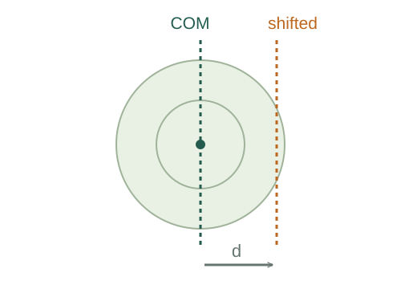

Derive the parallel-axis theorem
Shifting a rotation axis away from the centre of mass increases the moment of inertia by total mass times the squared separation of the parallel axes.
What the symbols mean
Icm: moment of inertia about an axis through the centre of mass; d: perpendicular separation of the parallel axes; M: total mass.
When this applies
The two axes are parallel, and the reference axis passes through the centre of mass.
Developing the argument

Place the centre of mass at the origin
Choose the original axis along z and shift the new parallel axis by distance d in the x direction. A mass element has coordinates x, y relative to the original axis.
Expand the new squared radius
Moment of inertia uses perpendicular squared distance, so substitute the expansion under the mass integral.
A closer lookWhy integrate squared distance over mass? ↗Derive rotational kinetic energy and moment of inertiaUse the defining centre-of-mass condition
At a centre-of-mass origin, ∫x dm = 0. Thus the term linear in d disappears; this is exactly why the reference axis must be central.
Identify the remaining pieces
The first two squared coordinates give Icm. The constant d² factors out of the last integral and ∫dm = M.
A worked example
A uniform rod of length L has central transverse inertia ML²/12. A parallel axis at one end gives Iend = ML²/12 + M(L/2)² = ML²/3.
Derivation behind this calculation ↗A point to keep straight
Do not add Md² to an arbitrary noncentral moment of inertia. First refer both axes to the relevant central parallel axis.
Check the assumptions and derivation ↗